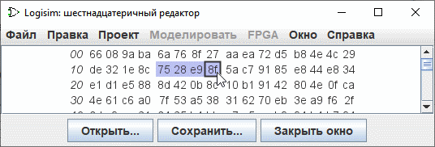

Шестнадцатеричный редактор
Logisim-evolution включает в себя встроенный шестнадцатеричный редактор для просмотра и изменения содержимого памяти. Для доступа к нему вызовите контекстное меню компонента (щелчок правой кнопкой мыши) и выберите пункт | Изменить содержимое… |. Для компонентов ПЗУ (ROM) открыть редактор можно также щелчком по значению атрибута Содержимое на панели свойств.

Интерфейс и навигация
Числа, выделенные курсивом в левом столбце, обозначают базовые адреса памяти в шестнадцатеричном формате. Остальные числа в строке — это сами данные (значения), хранящиеся начиная с указанного адреса. В зависимости от ширины окна, редактор автоматически подстраивает сетку, выводя по 4, 8 или 16 значений в строке. Для удобства визуального восприятия каждая группа из четырёх ячеек отделена увеличенным отступом.
Перемещаться по адресам можно с помощью полосы прокрутки или клавиш навигации (Стрелки, Home, End, Page Up, Page Down). Ввод шестнадцатеричных символов с клавиатуры мгновенно перезапишет значение в текущей выделенной ячейке.
Выделение и буфер обмена
Вы можете выделить диапазон ячеек несколькими способами: перетаскиванием курсора мыши, щелчком с зажатой клавишей Shift или перемещением курсора стрелками с зажатым Shift.
Выделенные данные поддерживают стандартные операции копирования, вырезания и вставки. Их можно выполнить через главное меню | Правка | или с помощью горячих клавиш (Ctrl-C, Ctrl-V, Ctrl-X). Данные в буфере обмена передаются в виде обычного текста, что позволяет легко обмениваться ими с внешними приложениями (например, текстовыми редакторами).
Работа с файлами
Для загрузки или сохранения образа памяти используются кнопки Открыть… и Сохранить… в окне редактора. Подробную информацию о поддерживаемых форматах файлов можно найти в разделе Контекстное меню и файлы.